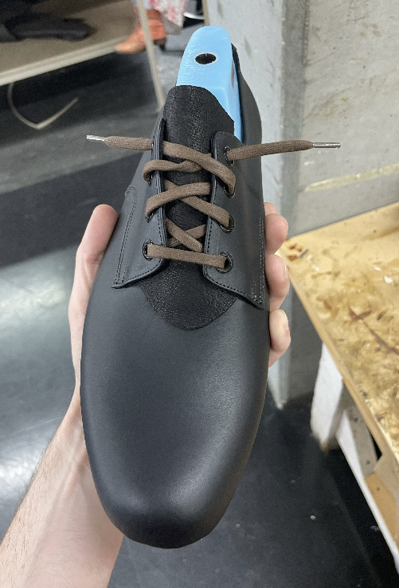
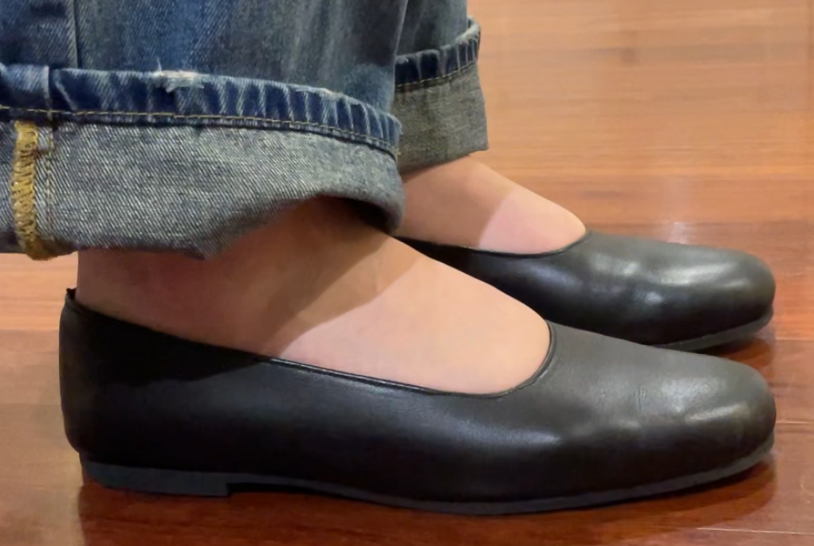
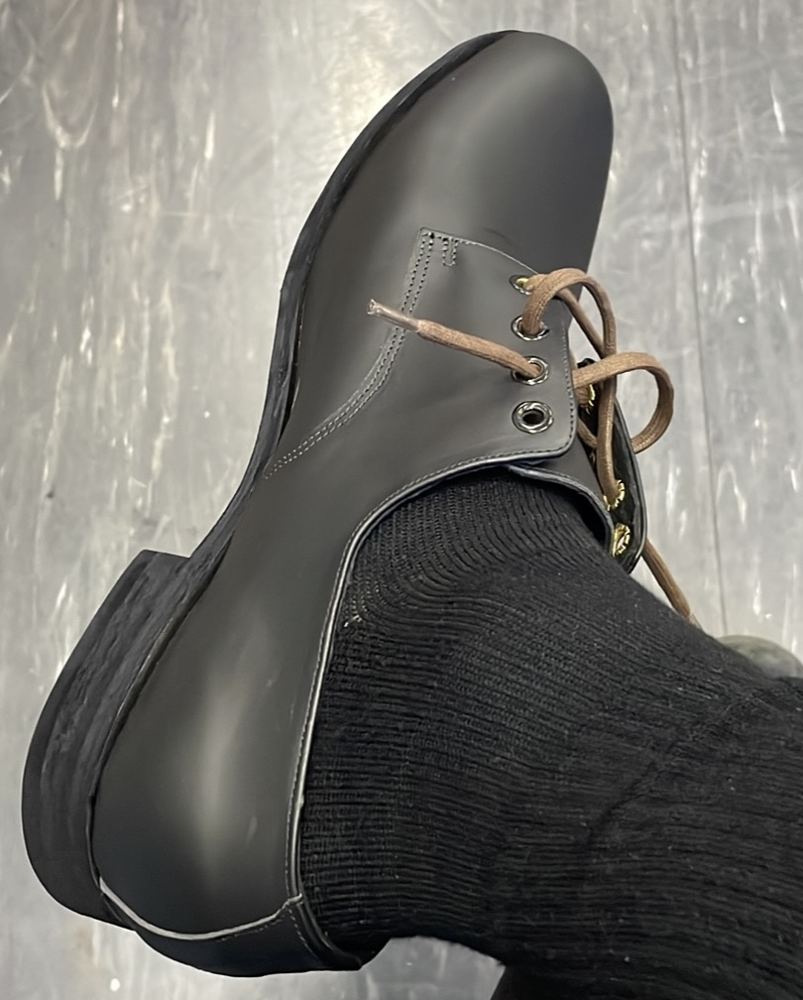
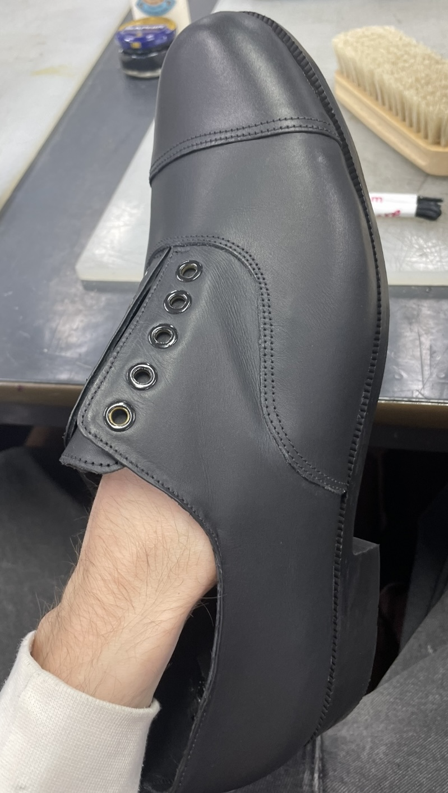

Leather Footwear
Introduction to Footwear




Leather Footwear
Introduction to Footwear
The foundation of my footwear studies, recreating classic leather shoes in three different styles. It taught me the basis of patternmaking, lasting, cutting and sewing uppers and finishing footwear. This allowed me to further my development into my work today.
- Patternmaking
- Cut and Sew
- Prototyping
- Sketching
- Hand Lasting
Technique: Hand-cut, hand-stitched, and hand-lasted construction.
Materials: Chrome-tanned leather uppers, Pig skin lining, Hand-dyed veg-tanned soles and Stacked leather heels.